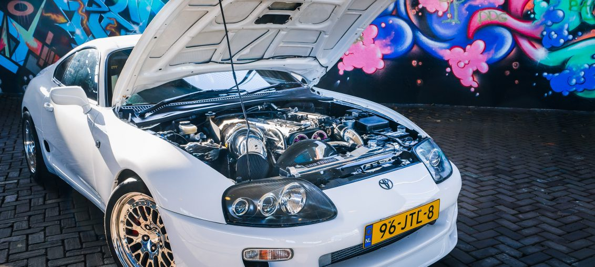

Toyota Supra
Fourth Generation Mk4 (A80)
Toyota Supra
Fourth Generation Mk4 (A80)

Towards the beginning of the Nineties, Japan's automakers were producing some of the most exciting cars ever made. The Acura NSX offered mid-engined dynamics and all-aluminum weight savings. The twin-turbo Mazda RX-7 was razor-edged and unforgiving. The Mitsubishi 3000GT was crammed with technology. And the MkIV Supra? That was Toyota's mic drop moment.
Introduced in 1993, the MkIV Supra Turbo came with a 320 hp twin-turbo straight-six, an available Getrag six-speed gearbox, and was roughly 200 lb lighter than the third-generation car. In testing, it pulled nearly 1g on the skidpad, ran through the slalom at 66 mph, and could sprint to 60 mph in five seconds or less.
At the heart of this beast was the 2JZ-GTE powerplant, which featured double overhead cams in an aluminum head and a cast-iron block. This time, Toyota's engineers didn't leave any weak points, overengineering the motor to the point that nearly doubling the output is merely a case of adding more fuel and boost.

The Supra was still more a grand tourer than an outright sports car, but all the performance you could want was there. However, the top of range Turbo models were also quite expensive, which made them rare when new, and consequently, pricey now. The “more than you can afford, pal” shoe is now on the other foot.
The naturally aspirated MkIV Supra isn't quite the juggernaut that a Turbo is, but they're still quite desirable. Power is a reliable 220 hp.
1995 – In Japanese Grand Touring Racing specification, a Supra was fielded at the 24 Hours of Le Mans, finishing 14th. Weirdly, it wasn't equipped with its original inline-six but with a 2.1-liter four-cylinder engine boosted to 650 hp. 1996 – In the US, all Turbo models came with an automatic transmission as standard, as well as a Targa roof. The manual transmission returned the next year. 1997 – When tested by Car and Driver, a Supra Turbo managed a 70-0 mph stopping distance of 149 ft. This remained the shortest stopping distance recorded by the magazine for seven years, until a Porsche Carrera GT bested it in 2004 by just 4 ft. 1998 – In the last year of U.S. sales, the Supra Turbo wasn't available in states with CARB emissions standards. 2001 – The original The Fast and the Furious Supra was actually the real deal. Belonging to the film's technical director, Craig Lieberman, it had a single T-66 turbo upgrade, 650cc injectors, and made roughly 550hp. 2007 – Probably the wildest street Supra of all time is the golden Top Secret Supra created by Kazuhiko “Smoky” Nagata. Improbably, it has the V-12 engine out of the Toyota Century limousine installed, as well as a pair of turbos, for an output of more than 1000 hp.